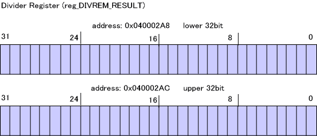
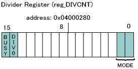

The DS has accelerators for division and square-root computations. This section explains the Divider.
Registers for Division
Data registers have been prepared for the dividend, the divisor, the quotient and the remainder.

The relationship between these registers is as follows:
Also, a control register is provided to control the Divider.

Operations of the Divider
To perform calculations, the Divider sets the dividend and the divisor in the data registers DIV_NUMER and DIV_DENOM. After the control register DIVCNT is appropriately set, the results of the division are saved in DIV_RESULT and DIVREM_RESULT. (In actuality, the calculation begins right after a value has been set in either DIV_NUMER, DIV_DENOM, or DIVCNT. If data is written to the registers during the calculation, the calculation begins all over again.)
There are three modes for division:
You can switch between modes by changing the value set in the MODE bit of the DIVCNT register.
When the Divider begins a division calculation, the DIVCNT register's BUSY bit becomes 1. The bit retains that value until the result are computed. When this bit changes to 0, the values in the DIV_RESULT and DIVREM_RESULT registers hold the completed computation result.
When the divisor is 0, the DIVCNT register's DIV0 bit becomes 1. When this is the case, the calculation result is undefined.
Calculation Cycles
The number of cycles required by the Divider to perform a division calculation varies, depending on the division mode.
To make more efficient use of the Divider, you can perform another task while waiting for the results after setting the parameters in the Divider's data registers.
Setting the Parameters
Use the CP_SetDivImm* and CP_SetDiv* functions to set the parameters for the Divider. Both functions can set both the dividend and the divisor. The CP_SetDiv* function can also be used to set the DIVCNT register's division mode.
CP_SetDivImm32_32(), CP_SetDivImm64_32(), CP_SetDivImm_64_64()
CP_SetDiv32_32(), CP_SetDiv64_32, CP_SetDiv64_64()
Thus, if you plan to perform a succession of division calculations in the same division mode, you can use the CP_SetDiv* function the first time and then use the CP_SetDivImm* function for all subsequent calculations.
Waiting for Calculation to End
To check whether the calculation has ended, call the CP_IsDivBusy function.
To wait for the calculation to end, call the CP_WaitDiv function.
Getting the Calculation Result
To get the quotient of the division calculation, call either the CP_GetDivResult* or the CP_GetDivResultImm* function.
The former waits until the DIVCNT register is no longer in the BUSY state before fetching the result. The latter acts immediately.
To get the remainder, call the CP_GetDivRemainder or CP_GetDivRemainderImm* function.
The former waits until the DIVCNT register is no longer in the BUSY state before fetching the result. The latter acts immediately.
Note
When the division mode is "32-bit divided by 32-bit" or "64-bit divided by 32-bit," the upper 32 bits in data registers for which only 32 bits are being used need to be filled with zeros. The TWL-SDK functions do this automatically. However, don't forget to do this when your application directly sets values in the registers.
If you are using the thread system, the Divider calculations are thread safe by default.
Example
The following is an example using the Divider to conduct a division calculation and then displaying the result.
u32 quotient;
u32 remainder;
//---- set parameter and div-mode
CP_SetDiv( 0x12345678, 0x300, CP_DIV_32_32BIT_MODE );
//---- wait for division to finish
CP_WaitDiv();
//---- display result
quotient = CP_GetDivResultImm32();
remainder = CP_GetDivRemainderImm32();
OS_Printf( "quotient=%x, remainder=%x\n", quotient, remainder );
Precautions on Use Inside Interrupts
When using a divider or square root calculator inside an interrupt, there is a chance that the calculated result for the interrupt source will be destroyed.Be sure to back up and restore the status of any divider or square root calculator used inside an interrupt with the CP_SaveContext and CP_RestoreContext functions, respectively. When threads are switched, the contents of dividers are also automatically restored from thread context.
void intr_func( void )
{
CPContext context;
CP_SaveContext( &context );
CP_SetDiv32_32( 1000, 5 );
CP_WaitDiv();
result = CP_GetDivResult();
CP_RestoreContext( &context );
}
2008/07/11 Changed notation from Nitro-SDK to TWL-SDK.
2006/08/07 Changed the calculation cycles given to CPU cycles and added a note regarding the use of dividers inside interrupts.
2004/12/27 Initial version.
CONFIDENTIAL